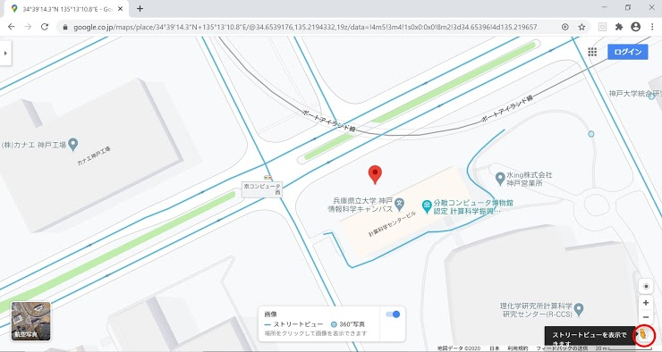
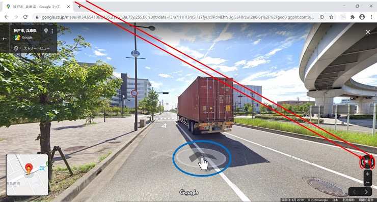
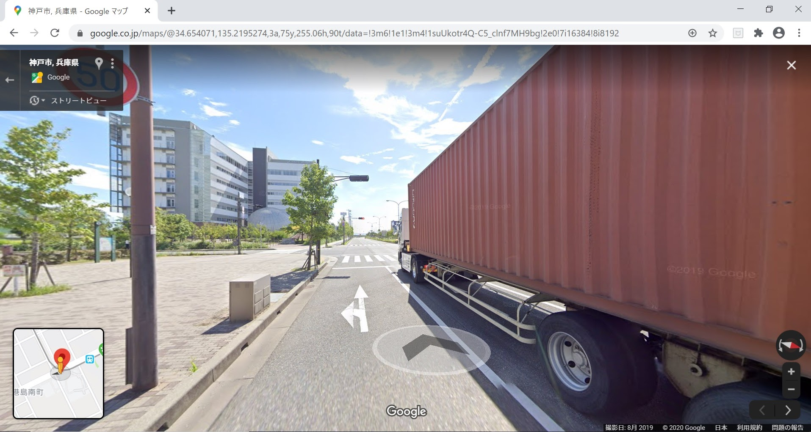

事故事案発生地点の緯度経度の確認方法とその場所の説明例
Step 7
グーグルストリートビューで場所を確認する場合は、赤丸の人型のところをクリックすると以下のように水色のラインが地図上に出ます。
Step 8
上記の水色ラインの部分をクリックすると以下のような画面になります。

Step 9
赤丸の部分をクリックすると画面が回転します。また、地図上にポインタを合わせていると、青丸の中にある矢印が出て来て、クリックすると画面に映る場所を移動できます。
Step 10
青丸の中にある矢印をクリックした場合
